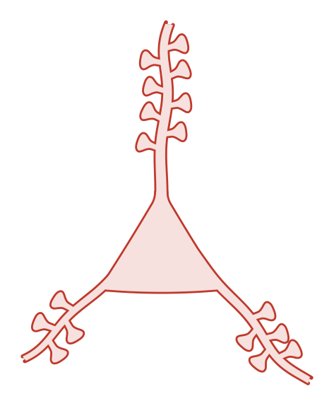
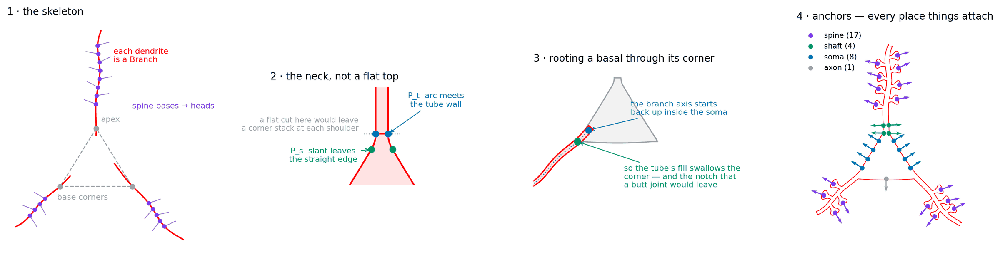
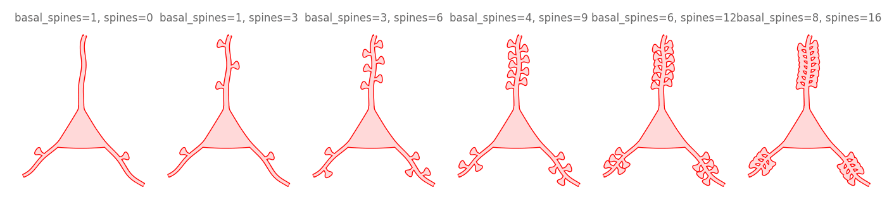
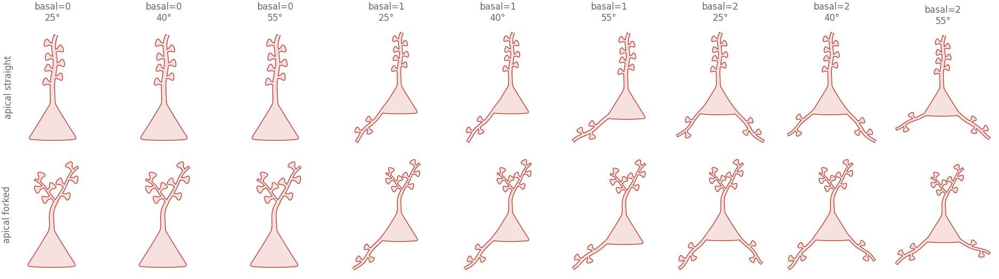
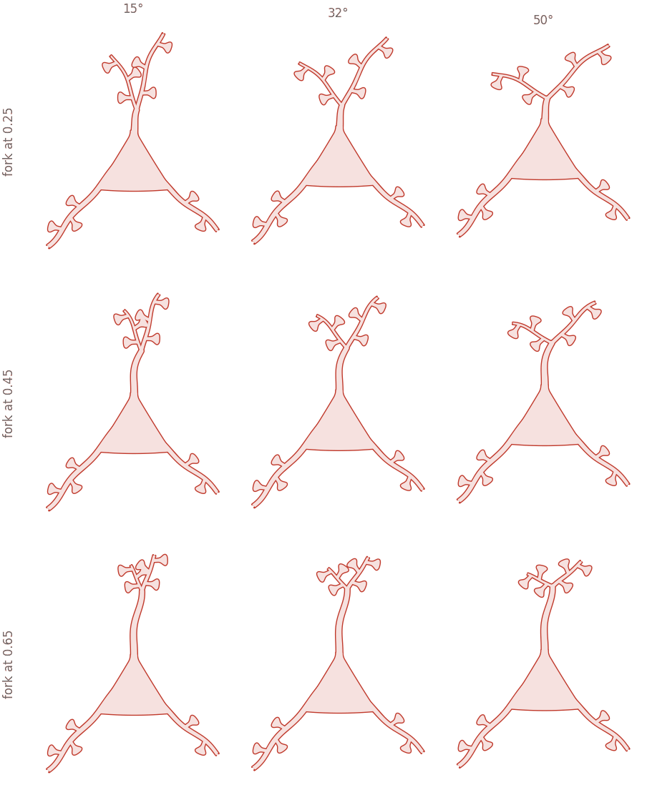

All examples Neuroscience
Pyramidal cell
A triangular soma with spiny dendrites out of it — apical up, basals down — soma, dendrites and every spine forming one unbroken outline.
neuro.Pyramidal

How it is built

- The skeleton. Three points, a
Branchper dendrite, a tracedProfileper spine. Nothing neuron-specific. - The neck, not a flat top. Each slanted edge turns tangentially into the tube wall — no corner left.
- A basal roots through its corner. The axis starts inside the body, so the fill swallows the vertex.
- Anchors. Every place something attaches, with the direction leading away. Connectors and labels consume these.
| anchor | where | count above |
|---|---|---|
spine | each spine head, the widest point | 18 |
shaft | the bare proximal apical, both walls | 4 |
soma | down each slanted flank | 4 |
axon | the bottom of the soma, pointing down | 1 |
Drawing one
import biodraw as bd
cell = bd.neuro.Pyramidal(
spines=8, # spines along the apical
basal=2, # basal branches off the soma's bottom corners
basal_spines=5, # ...and spines on each of those
spine_extend=0.04, # extra neck, so heads stand clear of each other
)
fig, ax = bd.canvas(figsize=(3.0, 4.2))
cell.draw(
ax=ax,
wall_lw=1.0, # wall thickness, in points
gid="pyramidal", # names the layers in the exported SVG
)
cell.fit(ax, pad=0.2)
bd.save(fig, "pyramidal.svg")
distal = cell.anchor("spine", branch="apical", rank=-1)Spininess

Body plans

Forking the apical

Every figure above is output, not a stored asset —
drawn by pyramidal_cell/build.py, in Python, on a matplotlib axes.